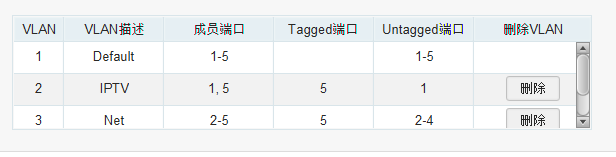
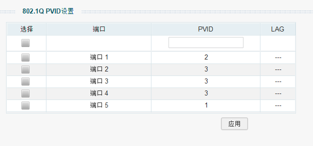
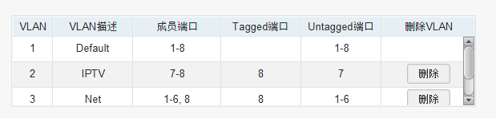
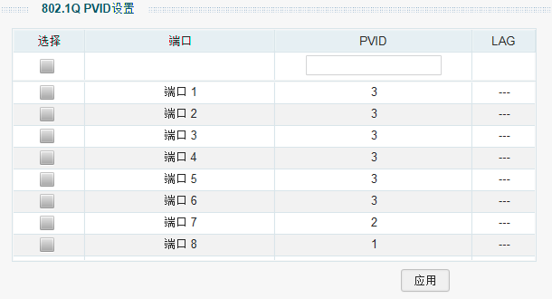

单线复用 iptv
本文最后更新于：2021年1月2日 下午
有两个支持 vlan 的设备就可以了。
前言
家里搬了新房，但是搞网络的时候遇到了问题，就是弱电箱在门口，而客厅只有两个接口。
一般来说无线路由器放在房子中央比较好，因为这样每个房间都能够有较强的信号。但又想每个房间里面都能够用网口的话，就得在网络汇聚处（一般家里都是弱电箱）放置一个交换机，交换机再接路由器的 lan 口，这个样子来进行使用。
但是问题来了，一般家里的弱电箱都是在入户处，并且往往只会有一个无线路由器来同时进行拨号上网以及路由的功能。这个时候如果把无线路由器放置在弱电箱的话，一般来说都会有一个房间信号特别差（要穿两到三堵墙）。
那么有什么好办法来解决呢？就是把无线路由器放到客厅里面，光猫的网口连接到路由器的 wan 口，然后路由器的 lan 口再连回弱电箱中的交换机，各个房间的网线连到交换机上，这样就可以每个房间的网口都能上网了。但是又有一个问题了，客厅有两个网口，一个网口接到了路由器的 wan 口上，一个网口接到了路由器的 lan 口上，那么 iptv 的网口该怎么接呢？
有一种解决方法是获取光猫的超级密码后，把光猫自带的无线功能绑定到 iTV 的端口上，这样机顶盒就可以通过无线连接来获取信息了。不过毕竟是对光猫进行操作，万一搞崩了呢？所以就另外想办法吧。
正文
vlan 的介绍
这个时候就是用到 vlan 的时候了。
简单来说， vlan 就是虚拟的 (v) 局域网(lan)，它是一个工作在 OSI 模型 中的第二层数据链路层的广播域。这个主要是为了区分各个单位的广播。如果没有 vlan 的话，那么就会直接在整个局域网里进行广播，消耗的资源与局域网中的设备成正比。即使在三层网络层中划分了子网，但是也只是在三层中进行了丢弃，实际上对于数据链路而言，这个数据包还是会占用资源。
因此就在第二层再划分一次 子网 ，只在这个 子网 中进行广播。这样就减少了占用的资源。
做一个不恰当的比方，比如说在你面前有个几条车道
| 1 | 2 | 3 | 4 |
| | | | |
| | | | |
| | | | |
| | | | |
| | | | |
[_______________]不划分 vlan 的话，在局域网中遇到 BUM 流量
- B(Broadcast 广播)
- U(Unknown Unicast 未知的流量)
- M(Multicast 组播)
就会同时占用 1~4 四个车道进行货物的运输, 即对四个端口都转发数据包。
四个的负载可能不高，那么四十个，四百个呢？
这个时候就要划分好 vlan 了。vlan 就相当于是把这几个车道做了物理隔离，不能转到别的车道了。
| vlan 1| | vlan 2|
| 1 | 2 | | 3 | 4 |
| | | | | |
| | | | | |
| | | | | |
[_______| |_______]这个时候就是划分了两个 vlan 了。1,2 车道的货物可以互相传递，而不能和 3,4 车道进行互联互通。遇到了 BUM流量也只在自己的广播域 vlan1，vlan2 中进行广播。在端口收到了数据后，如果自己不属于这个数据的vlan 那么就会直接进行舍弃，相对与子网划分而言安全性更高，隔离性更好。
实际操作
下面我给一张我家的拓扑图

我这种拓扑图的需求是
- 光猫桥接，路由器拨号
- 需要观看 IPTV
- 路由器在客厅，和 IPTV 在一起
其实要做的我在 前言 里面写的差不多了，大致分为以下几步
-
购买两个支持 vlan 的交换机，一般来说直接找网管交换机就可以了 (路由器支持vlan 的话只用购买一个网管交换机放在弱电箱里面就好了)。
-
在两个交换机中分别划分好 vlan
- 第一个交换机


- 第二个交换机


这里我是把第一个交换机的第五个端口作为汇聚端口，可以同时传输 vlan2 和vlan3的数据。
然后第一个交换机的第一个端口作为 iptv 的端口 即 vlan2 而第二到第四端口作为网络的端口 即 vlan3
而第二个交换机的第八个端口作为汇聚端口，同时传输 vlan2 和 vlan3 的数据。
然后第二个交换机的第七个端口作为 iptv 的端口 即 vlan2 而第一到第六端口作为网络的端口 即 vlan3
下面简单说明一下 tag 和 untag 的作用
- 普通终端设备网卡（itv，电脑，电视）只能接收到无 vlan 标识的数据包
- untag 端口
- 接收到没有标识的数据包，会打上当前端口的 pvid 标识然后转发
- 接收到带 vlan 标识的数据包
- vlan标识和端口对应的 pvid 相同，接收转发
- vlan标识和端口对应的 pvid 不同，丢弃
- tag 端口接收到数据包，
- 接收到没有标识的数据包，会打上当前端口的 pvid 标识然后转发
- 接收到带 vlan 标识的数据包
- 这个端口属于标识的vlan，接收转发
- 这个端口不属于标识的vlan，丢弃
用个表格来表示的话如下所示：
Tagged 数据 Untagged 数据 in out in out Tagged 端口 看情况接收 原样发送 接收 按照端口的 PVID 打 TAG 标记 Untagged 端口 看情况接收 去掉 TAG 标记 接收 按端口的 PVID 打 TAG 标记 - 第一个交换机
最后跑一下网速

参考
不改光猫任何配置，水星 SG105 Pro 完美解决电信 ITV、网络单线复用
网络设备 篇一：家庭网络改造 - 单线复用实践总结
本博客所有文章除特别声明外，均采用 CC BY-SA 4.0 协议 ，转载请注明出处！